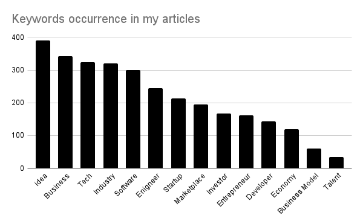

Blogs as a source of good Hire signal
My Blogging activity metrics as an Example of Use Case

When I was saying that the actual sourcing and recruiting process of most companies is outdated I was thinking that they still continue to spend an enormous time processing resumes that should be short while they have the opportunity and the technology for gathering all the content produced by the applicants who like I blog often about their opinions and interest and sometimes about their personal life. A blog if it is written by the person that we would know more about is a useful source of information that can give us clues about what this person is and what interests him or her and how skilled he or she is.
As an example, I have chosen myself and explored all my writings manually (with a simple advanced google search) in 30 in order to get simple data that can be clues about what Interests me and this can take less time with an automated data processing tools. The chart below shows you the number of occurrences of some keywords in my articles. I have to date written 574 articles in Medium in less than a year and a half.

The chart shows clearly that idea, business, tech, industry, software, and an engineer are the top things among the fields that I am interested in. The business of technology and the tech economy are my main fields of interest and I am likely to be skilly at them. The Pie chart below shows the proportion of each of these topics of interest taken in my writing journey.
What is most interesting is that in terms of the diversity of gender I am doing what many are failing to do because thanks to this commitment to write about woman software engineers through what I called the Greyio Heart Experiment that I have taken months ago, I am now writing equitably about Women and Man. You can see the Equilibrium between the number of times I have written the words Man and the word Woman
This can look like to have any importance at all but if you compare it with other profiles of people who write often you will see that there is almost always an imbalance because men writers use to write more the word man than the word woman and vice versa. This idea of reaching the equilibrium at using gender In my articles went as far as thinking that search engines should take care of this metric I have shown you above for their ranking algorithm. but this article is not about Search engines but about HR methods and my writing statistics. I will write certainly about how this ranking factor I am talking about could be implemented by a search engine in this book I am writing about diversity in technology inspired by this article title anime search engine for Mbenda.
You can see that it is easy for a tech company to know that I am personally writing all these 574 articles on purpose and easy for it to extract and get this kind of data that I have presented to you but It’s like none of them is doing that actually. Then, you, tech-enabled products and services entrepreneurs, have a tech-enabled skill sourcing platform that you can build, and job seekers are highly advised to start blogging every day because soon or later this will be part of the key source of hiring decisions of most companies mainly the tech one.
Hope that you can see that there is a lot that we can learn from someone by analyzing his or her blog but companies have just ignored this way of learning about candidates and I do think that it is the best way to source and hire talented people like you and me.
PS: You can see that Financial Markets are among my field of interest and I am writing a lot about fintech and financial market in DataDrivenInvestor bu this chart below which compares the keywords Financial and Market with the others keywords I presented to you show clearly this point